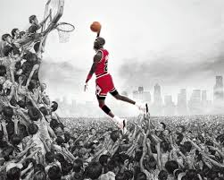

Michael Jeffrey Jordan nasce il 17 febbraio 1963 nel quartiere di Brooklyn, a New York,Nel 1991 vinse il suo primo titolo NBA con i Bulls, seguito da altri due nel 1992 e 1993, ottenendo un cosiddetto three-peat. Dopo aver abbandonato improvvisamente la pallacanestro prima dell'inizio della stagione 1993-94 per intraprendere una carriera nel baseball, Jordan tornò ai Bulls nel corso della stagione 1994-95, guidando la squadra ad altri tre titoli consecutivi nel 1996, 1997 e 1998, facendo segnare anche il tuttora imbattuto record di 72 vittorie nella regular-season NBA nella stagione 1995–96. Jordan si ritirò quindi una seconda volta dopo aver vinto il suo sesto titolo nel 1998, salvo tornare sul parquet per altre due stagioni nel 2001, questa volta nei Washington Wizards.
